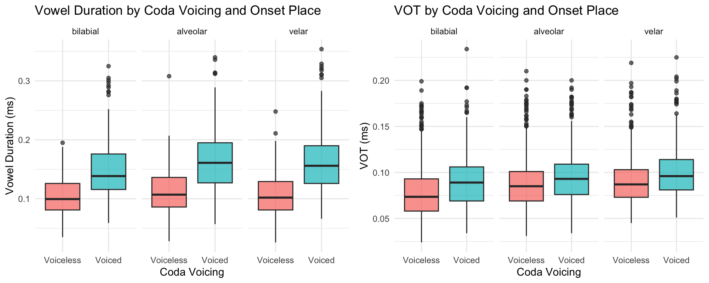
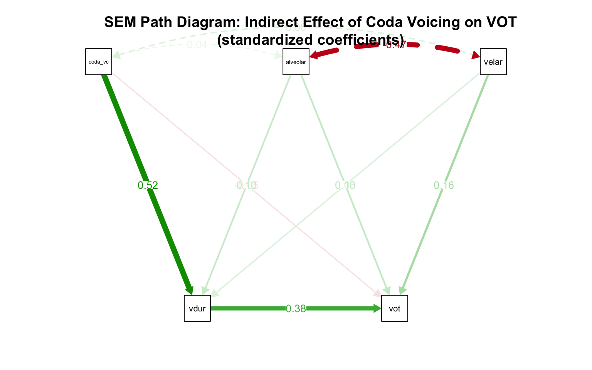

This analysis examines the voicing effect in English monosyllables: the well-documented phenomenon whereby voiced codas are preceded by longer vowels than voiceless codas. We extend this by asking whether coda voicing also exerts a long-distance, indirect effect on onset Voice Onset Time (VOT), mediated by vowel duration.
The hypothesized causal chain is:
\[\text{Coda Voicing} \xrightarrow{a} \text{Vowel Duration} \xrightarrow{b} \text{VOT}\]
We use Structural Equation Modelling (SEM) via the
lavaan package to estimate:
Because speakers vary substantially, we also fit a parallel
mixed-effects mediation analysis using the
mediation package with lme4 models, which
explicitly accounts for by-speaker random effects.
# Install any packages you do not yet have by uncommenting the line below:
# install.packages(c("lavaan", "lme4", "mediation", "semPlot", "tidyverse"))
library(lavaan) # Structural equation modelling
library(lme4) # Mixed-effects models (for the mediation approach)
library(mediation) # Mediation analysis with mixed-effects models
library(semPlot) # Path diagram visualization for SEM
library(tidyverse) # Data manipulation and plotting# -----------------------------------------------------------------------
# IMPORTANT: Replace this section with your own data loading step.
# For example: data <- read.csv("your_data.csv")
# The analysis below assumes a dataframe called "data" with the
# following columns:
# sub : speaker identifier (factor)
# ons_poa : onset place of articulation (1=bilabial, 2=alveolar, 3=velar)
# coda_vc : coda voicing (0=voiceless, 1=voiced)
# vdur : vowel duration (numeric, milliseconds)
# vot : voice onset time (numeric, milliseconds)
# -----------------------------------------------------------------------
data <- read.csv("/Users/chandan/Desktop/data_12-11-24.csv", header=TRUE)
# Convert speaker ID to a factor if it is not already.
# This ensures R treats it as a grouping variable, not a number.
data$sub <- as.factor(data$sub)
# Convert onset place of articulation to a labelled factor.
# This prevents R from treating it as a continuous numeric variable,
# which would be phonologically meaningless (velar is not "more" than bilabial).
data$ons_poa <- factor(data$ons_poa,
levels = c(1, 2, 3),
labels = c("bilabial", "alveolar", "velar"))
# Coda voicing is already coded 0/1, which is what we need.
# 0 = voiceless coda, 1 = voiced coda.
# No transformation needed, but make sure R sees it as numeric.
data$coda_vc <- as.numeric(data$coda_vc)
# Create dummy variables for onset place of articulation.
# lavaan does not handle factors automatically the way lme4 does,
# so we need to create these explicitly.
# Bilabial (level 1) serves as the reference category.
data$alveolar <- ifelse(data$ons_poa == "alveolar", 1, 0)
data$velar <- ifelse(data$ons_poa == "velar", 1, 0)
# Quick check: make sure the data looks as expected
glimpse(data)## Rows: 2,376
## Columns: 12
## $ sub <fct> 1, 1, 1, 1, 1, 1, 1, 1, 1, 1, 1, 1, 1, 1, 1, 1, 1, 1, 1, 1, 1…
## $ init <chr> "AR", "AR", "AR", "AR", "AR", "AR", "AR", "AR", "AR", "AR", "…
## $ list <int> 1, 1, 1, 1, 1, 1, 1, 1, 1, 1, 1, 1, 1, 1, 1, 1, 1, 1, 1, 1, 1…
## $ word <chr> "pack", "pup", "cat", "tup", "cog", "puck", "pig", "kick", "t…
## $ ons_poa <fct> bilabial, bilabial, velar, alveolar, velar, bilabial, bilabia…
## $ coda_vc <dbl> 0, 0, 0, 0, 1, 0, 1, 0, 1, 1, 1, 1, 1, 0, 0, 1, 0, 0, 1, 0, 0…
## $ coda_poa <int> 3, 1, 2, 1, 3, 3, 3, 3, 3, 1, 1, 3, 1, 2, 1, 2, 1, 1, 2, 3, 2…
## $ vowel <chr> "ae", "uh", "ae", "uh", "aw", "uh", "ih", "ih", "uh", "uh", "…
## $ vot <dbl> NA, 0.064, 0.115, 0.113, 0.103, 0.072, 0.101, 0.098, 0.127, 0…
## $ vdur <dbl> NA, 0.080, 0.143, 0.083, 0.160, 0.090, 0.112, 0.095, 0.150, 0…
## $ alveolar <dbl> 0, 0, 0, 1, 0, 0, 0, 0, 1, 0, 1, 0, 1, 0, 1, 0, 0, 1, 0, 0, 1…
## $ velar <dbl> 0, 0, 1, 0, 1, 0, 0, 1, 0, 1, 0, 1, 0, 0, 0, 1, 0, 0, 1, 0, 0…# It is always good practice to examine your data before modelling.
# Here we look at mean VOT and vowel duration by coda voicing and place.
data %>%
group_by(ons_poa, coda_vc) %>%
summarise(
n = n(),
mean_vot = round(mean(vot, na.rm = TRUE), 2),
sd_vot = round(sd(vot, na.rm = TRUE), 2),
mean_vdur = round(mean(vdur, na.rm = TRUE), 2),
sd_vdur = round(sd(vdur, na.rm = TRUE), 2),
.groups = "drop"
)# Visualize the key relationships before modelling.
# Panel 1: Vowel duration by coda voicing (the classic voicing effect)
# Panel 2: VOT by coda voicing (the long-distance effect we are testing)
p1 <- ggplot(data, aes(x = factor(coda_vc, labels = c("Voiceless", "Voiced")),
y = vdur, fill = factor(coda_vc))) +
geom_boxplot(alpha = 0.7) +
facet_wrap(~ons_poa) +
labs(title = "Vowel Duration by Coda Voicing and Onset Place",
x = "Coda Voicing", y = "Vowel Duration (ms)") +
theme_minimal() +
theme(legend.position = "none")
p2 <- ggplot(data, aes(x = factor(coda_vc, labels = c("Voiceless", "Voiced")),
y = vot, fill = factor(coda_vc))) +
geom_boxplot(alpha = 0.7) +
facet_wrap(~ons_poa) +
labs(title = "VOT by Coda Voicing and Onset Place",
x = "Coda Voicing", y = "VOT (ms)") +
theme_minimal() +
theme(legend.position = "none")
# Print both plots side by side
gridExtra::grid.arrange(p1, p2, ncol = 2)
The SEM approach estimates all paths simultaneously in a single model. It does not natively handle random effects, but we include cluster-robust standard errors to partially account for speaker clustering.
# In lavaan syntax:
# ~ means "is regressed on"
# * is used to label a path coefficient (e.g., a*coda_vc labels the
# coefficient of coda_vc as "a" so we can refer to it later)
# := defines a new parameter as a function of existing ones
model <- '
# ---------------------------------------------------------
# MEDIATOR MODEL
# Coda voicing predicts vowel duration (path a).
# We also control for onset place of articulation.
# ---------------------------------------------------------
vdur ~ a*coda_vc + alveolar + velar
# ---------------------------------------------------------
# OUTCOME MODEL
# Vowel duration predicts VOT (path b).
# Coda voicing also has a potential direct path to VOT (path c).
# We again control for onset place.
# ---------------------------------------------------------
vot ~ b*vdur + c*coda_vc + alveolar + velar
# ---------------------------------------------------------
# DEFINED PARAMETERS
# These compute the effects we care about from the labeled paths above.
# ---------------------------------------------------------
# Indirect effect: how much of the coda voicing effect on VOT
# is carried through vowel duration? This is the key quantity.
indirect := a * b
# Direct effect: the remaining effect of coda voicing on VOT
# after accounting for the mediation through vowel duration.
direct := c
# Total effect: the sum of direct and indirect paths.
total := c + (a * b)
'# We use bootstrap standard errors (1000 resamples) because the indirect
# effect (a product of two coefficients) is not normally distributed.
# Bootstrap confidence intervals are more reliable for inference on
# indirect effects than standard asymptotic SEs.
#
# se = "bootstrap" requests bootstrapped SEs.
# bootstrap = 1000 sets the number of resamples (increase to 5000 for publication).
# cluster = "sub" provides cluster-robust resampling by speaker,
# which partially addresses the non-independence of observations.
set.seed(42) # Set seed for reproducibility
fit <- sem(model,
data = data,
se = "bootstrap",
bootstrap = 5000,
cluster = "sub")# Before interpreting path coefficients, check whether the model fits the data well.
# Key fit indices and conventional benchmarks:
# CFI > 0.95 (Comparative Fit Index; higher is better)
# RMSEA < 0.06 (Root Mean Square Error of Approximation; lower is better)
# SRMR < 0.08 (Standardized Root Mean Square Residual; lower is better)
summary(fit, fit.measures = TRUE)## lavaan 0.6-21 ended normally after 1 iteration
##
## Estimator ML
## Optimization method NLMINB
## Number of model parameters 11
##
## Used Total
## Number of observations 2366 2376
## Number of clusters [sub] 20
##
## Model Test User Model:
## Standard Scaled
## Test Statistic 0.000 0.000
## Degrees of freedom 0 0
## Information Expected
##
## Model Test Baseline Model:
##
## Test statistic 1221.310 202.395
## Degrees of freedom 7 7
## P-value 0.000 0.000
## Scaling correction factor 6.034
##
## User Model versus Baseline Model:
##
## Comparative Fit Index (CFI) 1.000 1.000
## Tucker-Lewis Index (TLI) 1.000 1.000
##
## Robust Comparative Fit Index (CFI) NA
## Robust Tucker-Lewis Index (TLI) NA
##
## Loglikelihood and Information Criteria:
##
## Loglikelihood user model (H0) 9336.654 9336.654
## Loglikelihood unrestricted model (H1) 9336.654 9336.654
##
## Akaike (AIC) -18651.308 -18651.308
## Bayesian (BIC) -18587.850 -18587.850
## Sample-size adjusted Bayesian (SABIC) -18622.799 -18622.799
##
## Root Mean Square Error of Approximation:
##
## RMSEA 0.000 NA
## 90 Percent confidence interval - lower 0.000 NA
## 90 Percent confidence interval - upper 0.000 NA
## P-value H_0: RMSEA <= 0.050 NA NA
## P-value H_0: RMSEA >= 0.080 NA NA
##
## Robust RMSEA 0.000
## 90 Percent confidence interval - lower 0.000
## 90 Percent confidence interval - upper 0.000
## P-value H_0: Robust RMSEA <= 0.050 NA
## P-value H_0: Robust RMSEA >= 0.080 NA
##
## Standardized Root Mean Square Residual:
##
## SRMR 0.000 0.000
##
## Parameter Estimates:
##
## Standard errors Bootstrap
## Number of requested bootstrap draws 5000
## Number of successful bootstrap draws 5000
##
## Regressions:
## Estimate Std.Err z-value P(>|z|)
## vdur ~
## coda_vc (a) 0.051 0.002 28.458 0.000
## alveolar 0.010 0.002 5.040 0.000
## velar 0.007 0.002 3.259 0.001
## vot ~
## vdur (b) 0.242 0.016 14.944 0.000
## coda_vc (c) -0.003 0.001 -2.177 0.029
## alveolar 0.007 0.001 4.608 0.000
## velar 0.010 0.001 7.358 0.000
##
## Intercepts:
## Estimate Std.Err z-value P(>|z|)
## .vdur 0.102 0.001 77.885 0.000
## .vot 0.055 0.002 28.483 0.000
##
## Variances:
## Estimate Std.Err z-value P(>|z|)
## .vdur 0.002 0.000 26.702 0.000
## .vot 0.001 0.000 26.275 0.000
##
## Defined Parameters:
## Estimate Std.Err z-value P(>|z|)
## indirect 0.012 0.001 12.516 0.000
## direct -0.003 0.001 -2.177 0.029
## total 0.009 0.001 7.397 0.000# Extract the full parameter table with bootstrap confidence intervals.
# boot.ci.type = "bca" requests bias-corrected accelerated intervals,
# which are more accurate than percentile intervals for indirect effects.
parameterEstimates(fit,
ci = TRUE,
boot.ci.type = "bca.simple",
standardized = TRUE) %>%
filter(op %in% c("~", ":=")) %>% # Keep regression paths and defined parameters
select(lhs, op, rhs, est, se, ci.lower, ci.upper, pvalue, std.all) %>%
mutate(across(where(is.numeric), ~round(.x, 4)))# semPlot produces a visual representation of the path model.
# This is useful for presentations and papers.
semPaths(fit,
what = "std", # Show standardized coefficients
whatLabels = "std",
style = "ram",
layout = "tree2",
residuals = FALSE,
intercepts = FALSE,
nCharNodes = 8,
edge.label.cex = 0.9,
title = FALSE)
title("SEM Path Diagram: Indirect Effect of Coda Voicing on VOT\n(standardized coefficients)")
The mediation package fits the two component models as
mixed-effects models with lme4, which properly accounts for
by-speaker random effects. This is the more conservative and
statistically appropriate approach given the speaker variation in your
data.
# MODEL 1: The mediator model
# Does coda voicing predict vowel duration, after accounting for
# onset place and by-speaker variability?
# (1 | sub) adds a random intercept for each speaker.
model.M <- lmer(vdur ~ coda_vc + ons_poa +
(1 | sub),
data = data,
REML = FALSE) # REML = FALSE is required for model comparison
# MODEL 2: The outcome model
# Does vowel duration predict VOT, after controlling for coda voicing,
# onset place, and by-speaker variability?
model.Y <- lmer(vot ~ vdur + coda_vc + ons_poa +
(1 | sub),
data = data,
REML = FALSE)
# Quick summaries to check the component models before running mediation
summary(model.M)## Linear mixed model fit by maximum likelihood ['lmerMod']
## Formula: vdur ~ coda_vc + ons_poa + (1 | sub)
## Data: data
##
## AIC BIC logLik -2*log(L) df.resid
## -8914.8 -8880.2 4463.4 -8926.8 2360
##
## Scaled residuals:
## Min 1Q Median 3Q Max
## -2.5194 -0.7721 -0.0954 0.7419 4.1936
##
## Random effects:
## Groups Name Variance Std.Dev.
## sub (Intercept) 0.0003278 0.01811
## Residual 0.0013074 0.03616
## Number of obs: 2366, groups: sub, 20
##
## Fixed effects:
## Estimate Std. Error t value
## (Intercept) 0.101738 0.004271 23.821
## coda_vc 0.050932 0.001510 33.739
## ons_poaalveolar 0.009809 0.001799 5.453
## ons_poavelar 0.006639 0.001825 3.637
##
## Correlation of Fixed Effects:
## (Intr) cod_vc ons_pl
## coda_vc -0.129
## ons_poalvlr -0.190 -0.074
## ons_poavelr -0.185 -0.089 0.473## Linear mixed model fit by maximum likelihood ['lmerMod']
## Formula: vot ~ vdur + coda_vc + ons_poa + (1 | sub)
## Data: data
##
## AIC BIC logLik -2*log(L) df.resid
## -12234.0 -12193.6 6124.0 -12248.0 2359
##
## Scaled residuals:
## Min 1Q Median 3Q Max
## -3.5814 -0.6325 -0.0515 0.5578 6.1157
##
## Random effects:
## Groups Name Variance Std.Dev.
## sub (Intercept) 0.0004712 0.02171
## Residual 0.0003165 0.01779
## Number of obs: 2366, groups: sub, 20
##
## Fixed effects:
## Estimate Std. Error t value
## (Intercept) 0.0671739 0.0050076 13.414
## vdur 0.1237283 0.0101503 12.190
## coda_vc 0.0029075 0.0009049 3.213
## ons_poaalveolar 0.0077491 0.0008906 8.701
## ons_poavelar 0.0112172 0.0009006 12.455
##
## Correlation of Fixed Effects:
## (Intr) vdur cod_vc ons_pl
## vdur -0.206
## coda_vc 0.073 -0.571
## ons_poalvlr -0.056 -0.112 0.004
## ons_poavelr -0.062 -0.075 -0.030 0.477# mediate() takes the two fitted models and estimates the indirect effect
# using quasi-Bayesian Monte Carlo simulation (or bootstrapping if boot = TRUE).
#
# treat = the independent variable (coda voicing)
# mediator = the mediating variable (vowel duration)
# boot = TRUE requests bootstrapped confidence intervals
# boot.ci.type = "bca" requests bias-corrected accelerated intervals
# sims = number of simulations (increase to 5000 for publication)
set.seed(42)
med.out <- mediate(model.M,
model.Y,
treat = "coda_vc",
mediator = "vdur",
boot = FALSE,
boot.ci.type = "bca",
sims = 1000)
summary(med.out)##
## Causal Mediation Analysis
##
## Quasi-Bayesian Confidence Intervals
##
## Mediator Groups: sub
##
## Outcome Groups: sub
##
## Output Based on Overall Averages Across Groups
##
## Estimate 95% CI Lower 95% CI Upper p-value
## ACME 0.0063076 0.0051629 0.0073749 <2e-16 ***
## ADE 0.0029231 0.0012534 0.0047452 0.002 **
## Total Effect 0.0092307 0.0077717 0.0108185 <2e-16 ***
## Prop. Mediated 0.6832336 0.5382465 0.8541139 <2e-16 ***
## ---
## Signif. codes: 0 '***' 0.001 '**' 0.01 '*' 0.05 '.' 0.1 ' ' 1
##
## Sample Size Used: 2366
##
##
## Simulations: 1000The mediate() summary reports four key quantities:
| Term | Meaning |
|---|---|
| ACME | Average Causal Mediation Effect — the indirect effect of coda voicing on VOT via vowel duration. This is the key result. |
| ADE | Average Direct Effect — the effect of coda voicing on VOT after controlling for vowel duration. |
| Total Effect | ACME + ADE — the overall effect of coda voicing on VOT. |
| Prop. Mediated | The proportion of the total effect carried by the indirect path. |
If the 95% CI for ACME excludes zero, we have reliable evidence for an indirect effect of coda voicing on VOT mediated by vowel duration.
The models above use random intercepts only. If you want a more conservative and thorough analysis, you can add random slopes, allowing the effects of interest to vary across speakers. This is theoretically motivated because speakers likely differ not just in their baseline VOT and vowel duration, but in how strongly their vowel duration responds to coda voicing.
# NOTE: eval=FALSE means this chunk is shown but not run automatically.
# Run it manually if your data support it. Random slopes models
# can fail to converge with small datasets or few speakers.
model.M.slopes <- lmer(vdur ~ coda_vc + ons_poa +
(1 + coda_vc | sub), # Random slope for coda voicing
data = data,
REML = FALSE,
control = lmerControl(optimizer = "bobyqa"))
model.Y.slopes <- lmer(vot ~ vdur + coda_vc + ons_poa +
(1 + vdur + coda_vc | sub), # Random slopes for both predictors
data = data,
REML = FALSE,
control = lmerControl(optimizer = "bobyqa"))
# If these converge, re-run the mediation with the slope models:
set.seed(42)
med.out.slopes <- mediate(model.M.slopes,
model.Y.slopes,
treat = "coda_vc",
mediator = "vdur",
boot = FALSE,
boot.ci.type = "bca",
sims = 1000)
summary(med.out.slopes)# Pull the key numbers from the mediation output for a clean summary table.
med_summary <- data.frame(
Effect = c("Indirect (ACME)", "Direct (ADE)", "Total", "Proportion Mediated"),
Estimate = c(med.out$d.avg, med.out$z.avg,
med.out$tau.coef, med.out$n.avg),
CI_Lower = c(med.out$d.avg.ci[1], med.out$z.avg.ci[1],
med.out$tau.ci[1], med.out$n.avg.ci[1]),
CI_Upper = c(med.out$d.avg.ci[2], med.out$z.avg.ci[2],
med.out$tau.ci[2], med.out$n.avg.ci[2]),
p_value = c(med.out$d.avg.p, med.out$z.avg.p,
med.out$tau.p, med.out$n.avg.p)
) %>%
mutate(across(where(is.numeric), ~round(.x, 4)))
med_summary# Always include session info in reproducible analyses so readers know
# exactly which versions of R and each package were used.
sessionInfo()## R version 4.6.0 (2026-04-24)
## Platform: aarch64-apple-darwin23
## Running under: macOS Sequoia 15.7.4
##
## Matrix products: default
## BLAS: /Library/Frameworks/R.framework/Versions/4.6/Resources/lib/libRblas.0.dylib
## LAPACK: /Library/Frameworks/R.framework/Versions/4.6/Resources/lib/libRlapack.dylib; LAPACK version 3.12.1
##
## locale:
## [1] en_US.UTF-8/en_US.UTF-8/en_US.UTF-8/C/en_US.UTF-8/en_US.UTF-8
##
## time zone: America/Los_Angeles
## tzcode source: internal
##
## attached base packages:
## [1] stats graphics grDevices utils datasets methods base
##
## other attached packages:
## [1] lubridate_1.9.5 forcats_1.0.1 stringr_1.6.0 dplyr_1.2.1
## [5] purrr_1.2.2 readr_2.2.0 tidyr_1.3.2 tibble_3.3.1
## [9] ggplot2_4.0.3 tidyverse_2.0.0 semPlot_1.1.8 mediation_4.5.1
## [13] sandwich_3.1-1 mvtnorm_1.3-7 MASS_7.3-65 lme4_2.0-1
## [17] Matrix_1.7-5 lavaan_0.6-21
##
## loaded via a namespace (and not attached):
## [1] Rdpack_2.6.6 mnormt_2.1.2 pbapply_1.7-4
## [4] gridExtra_2.3 fdrtool_1.2.18 rlang_1.2.0
## [7] magrittr_2.0.5 rockchalk_1.8.164 compiler_4.6.0
## [10] png_0.1-9 vctrs_0.7.3 reshape2_1.4.5
## [13] OpenMx_2.22.11 quadprog_1.5-8 pkgconfig_2.0.3
## [16] fastmap_1.2.0 arm_1.15-3 backports_1.5.1
## [19] labeling_0.4.3 pbivnorm_0.6.0 rmarkdown_2.31
## [22] tzdb_0.5.0 nloptr_2.2.1 xfun_0.57
## [25] cachem_1.1.0 kutils_1.73 jsonlite_2.0.0
## [28] jpeg_0.1-11 psych_2.6.5 parallel_4.6.0
## [31] cluster_2.1.8.2 R6_2.6.1 bslib_0.11.0
## [34] stringi_1.8.7 RColorBrewer_1.1-3 boot_1.3-32
## [37] rpart_4.1.27 jquerylib_0.1.4 Rcpp_1.1.1-1.1
## [40] knitr_1.51 zoo_1.8-15 base64enc_0.1-6
## [43] timechange_0.4.0 splines_4.6.0 nnet_7.3-20
## [46] igraph_2.3.1 tidyselect_1.2.1 rstudioapi_0.18.0
## [49] abind_1.4-8 yaml_2.3.12 qgraph_1.9.8
## [52] lattice_0.22-9 plyr_1.8.9 withr_3.0.2
## [55] S7_0.2.2 coda_0.19-4.1 evaluate_1.0.5
## [58] foreign_0.8-91 RcppParallel_5.1.11-2 zip_2.3.3
## [61] lpSolve_5.6.23 pillar_1.11.1 carData_3.0-6
## [64] checkmate_2.3.4 stats4_4.6.0 reformulas_0.4.4
## [67] generics_0.1.4 hms_1.1.4 scales_1.4.0
## [70] minqa_1.2.8 gtools_3.9.5 xtable_1.8-8
## [73] glue_1.8.1 mi_1.2 Hmisc_5.2-5
## [76] tools_4.6.0 data.table_1.18.4 openxlsx_4.2.8.1
## [79] XML_3.99-0.23 grid_4.6.0 sem_3.1-16
## [82] rbibutils_2.4.1 colorspace_2.1-2 nlme_3.1-169
## [85] htmlTable_2.5.0 Formula_1.2-5 cli_3.6.6
## [88] corpcor_1.6.10 glasso_1.11 gtable_0.3.6
## [91] sass_0.4.10 digest_0.6.39 htmlwidgets_1.6.4
## [94] farver_2.1.2 htmltools_0.5.9 lifecycle_1.0.5
## [97] lisrelToR_0.3